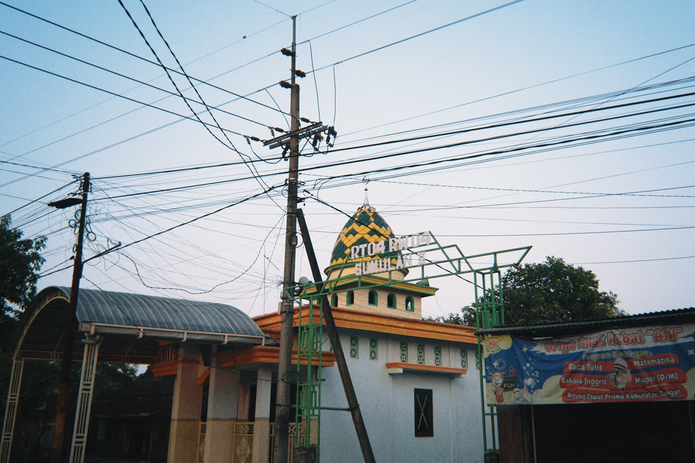
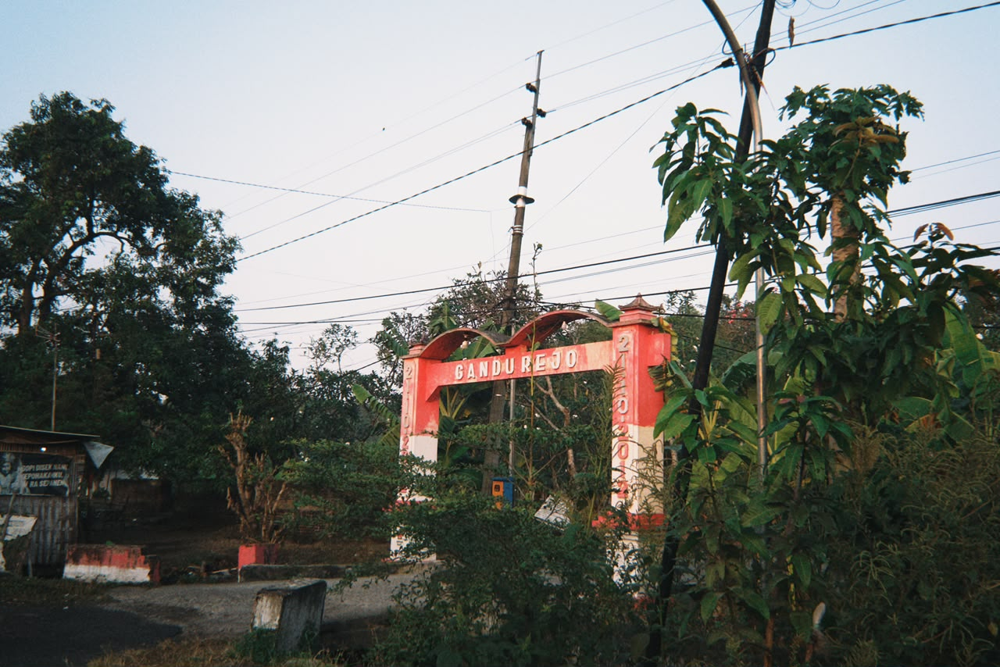
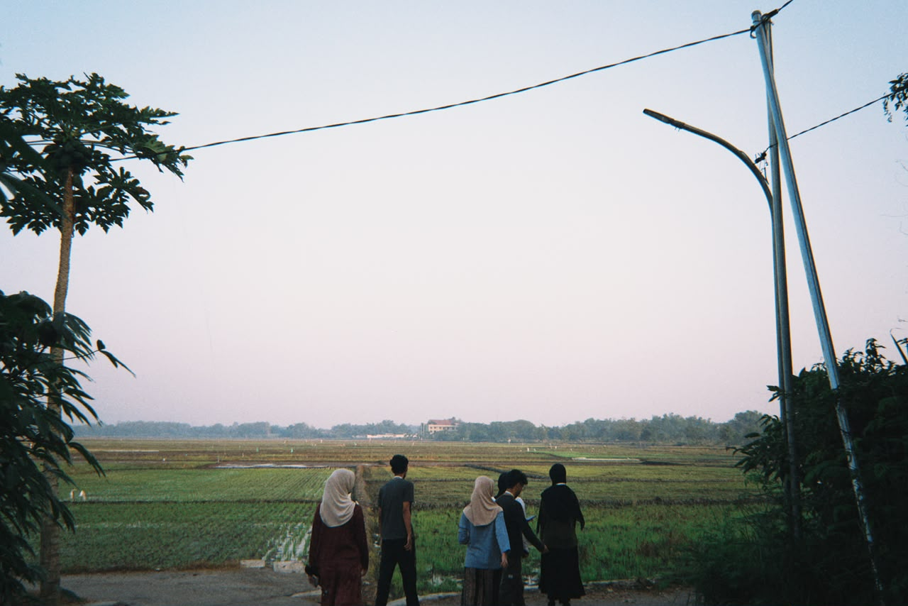
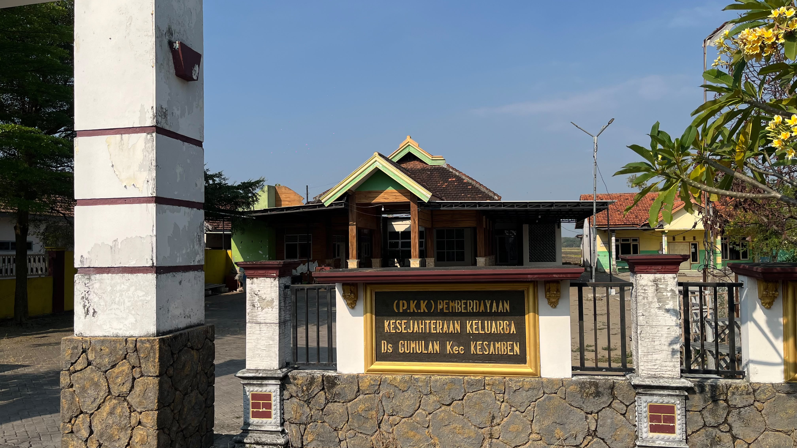
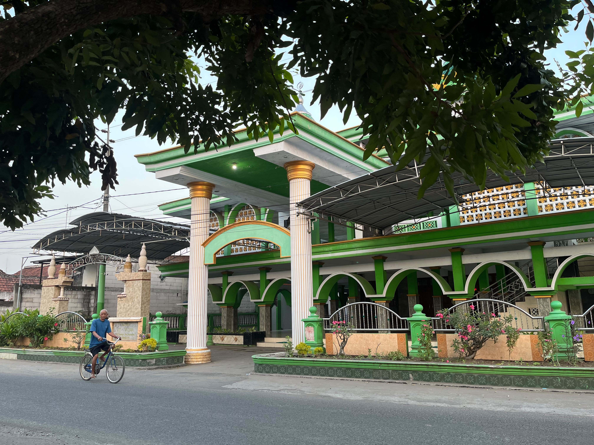
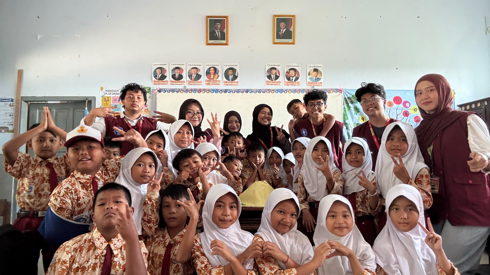
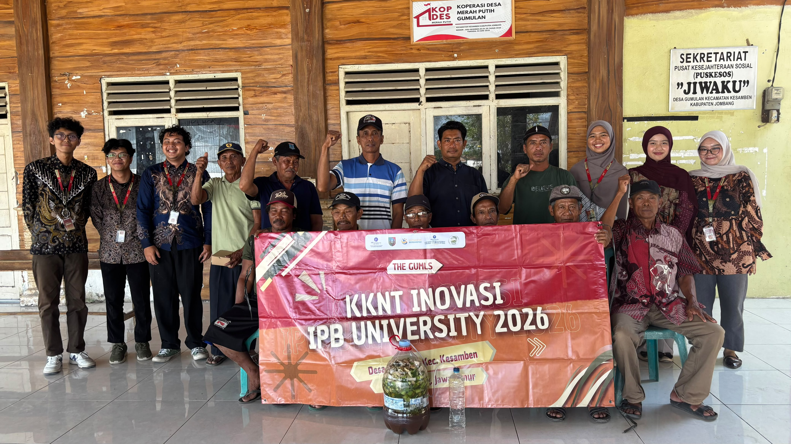

Selamat Datang di Desa Gumulan
Mewujudkan Desa yang Maju, Mandiri, dan Sejahtera.
Layanan Desa
Infografis Kependudukan
Total Penduduk
2.644 Jiwa
Laki-laki
1.303 Jiwa
Perempuan
1.341 Jiwa
Berdasarkan Jenis Kelamin
Berdasarkan Kelompok Umur
Berita Terbaru
Kumpulan berita dan liputan kegiatan mahasiswa KKNT Inovasi IPB di Desa Gumulan.

SAPA Gumulan: Kenalkan Sains melalui Eksperimen Kreatif bagi Siswa SD
Belajar sains tidak selalu harus dengan membaca buku. Mahasiswa KKN menghadirkan Program SAPA Gumulan untuk mengajak anak-anak bereksperimen langsung...
Baca selengkapnya ↗
Gumulan ReSoil: Ajak Petani Desa Manfaatkan Limbah Organik untuk POC
Menjaga kualitas lahan sangat penting agar tanah tetap produktif. Mahasiswa KKNT Inovasi IPB memberikan edukasi pemanfaatan bahan organik...
Baca selengkapnya ↗Kesan & Pesan Mahasiswa KKN
"Desa Gumulan punya potensi yang luar biasa. Warganya sangat ramah dan perangkat desanya sangat suportif ngebantu kelancaran proker kami dari awal sampai akhir!"
- Zaki, Tim KKN IPB 2026
"Pengalaman yang gak bakal terlupakan bisa belajar bareng masyarakat di sini. Semoga website percontohan ini bisa jadi awal digitalisasi yang mantap buat desa."